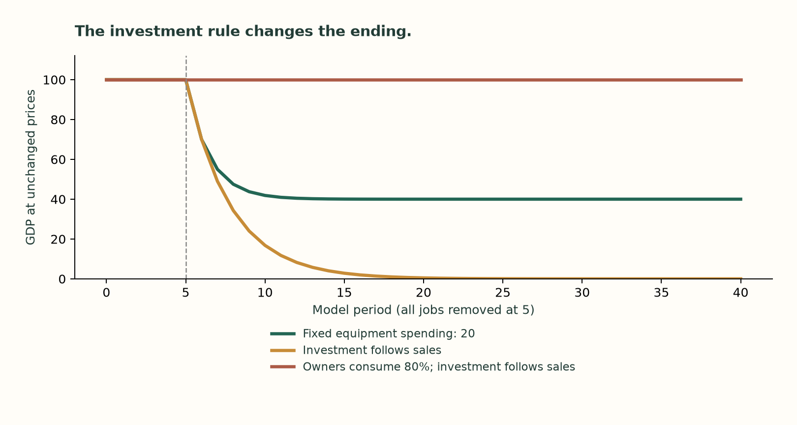
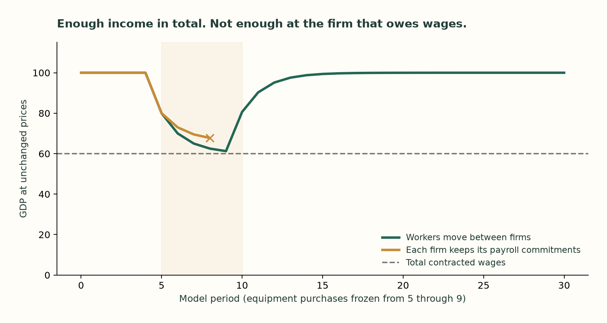
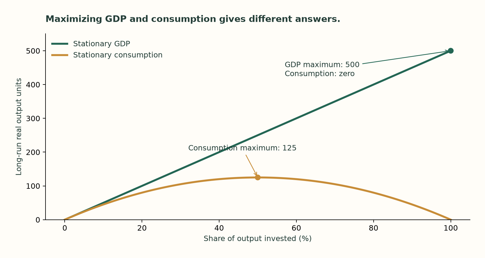
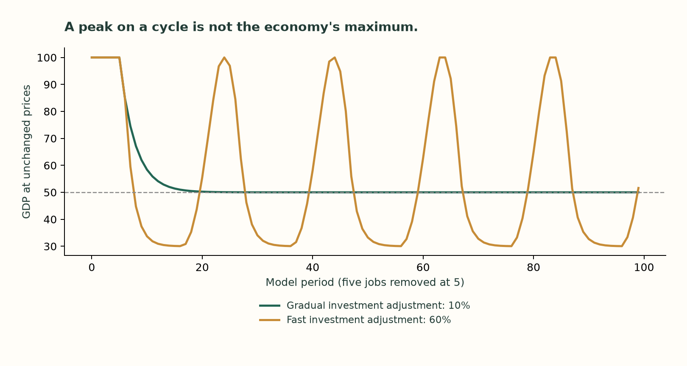

When does the
economy break?
The machines can work. That does not settle who buys their output—or which business can still pay its bills. Follow the same town through a shock.
All paths use invented units. Five normal periods establish the starting point. The shock then changes a spending, employment or financing rule while preserving existing money and machines. These are conditional experiments, not recession forecasts.
Change the rule. Follow the path.
Consumption above is actual purchases in money units. All selectable paths hold prices at one. “Workers” includes displaced people. Capital is the stock remaining at period end. A failed run stops; missing later periods are not zero GDP. Extremely small positive amounts are displayed in scientific notation.
Exact starting assumptions and shock schedule
The mechanism in one line.
After wages disappear, owners spend 50% of prior income and firms order equipment equal to 20% of prior sales. Only 70% returns as new spending: 100 → 70 → 49 → 34.3 → …. Keeping investment fixed at 20 creates a different ending. Neither spending rule is an accounting identity.

The decline is an asymptotic demand limit, not a finite-date bankruptcy. When the spending loop closes at 80% owner consumption plus 20% investment, positive output can persist; actual cash and capacity still constrain it.
Cash at the wrong company.
With fixed firm payroll shares, equipment producers miss payments even while total GDP exceeds the total wage bill. The economy has income; those particular firms lack the cash when wages fall due.

The cross marks the terminal arrears observation. The model has no emergency loan, bankruptcy resolution or automatic transfer of other firms' reserves.
A profitable choice can damage other firms' demand.
In the separate equal-share firm game, saving a wage of 6 lowers the town's eventual sales by 10. The adopter bears only 1 of that sales loss and gains 5 before setup costs. Combined operating surplus falls by 4.
That is a binary comparison against retaining the worker. Allowing closure and free re-entry changes the game: the default assumptions do not produce a stable pure-strategy configuration. Mechanical best-response cycles depend on update rules; they are not forecast business cycles. The game is separate from the cash ledger and does not finance installation.
Read the exit-option test and limitations · Inspect the game results
Maximum GDP is not maximum consumption.
Here machines have diminishing returns: output is proportional to the square root of capital. Technology and 10% depreciation stay fixed. Each point is a long-run allocation where investment replaces worn-out capital.

The fixed chart shows the uncapped case; the controls calculate no new economics and select saved Python allocations. This is a global maximum over a stated stationary model family, not a maximum over all technologies or a welfare-optimal transition. The earlier constant-productivity model can grow without a finite GDP ceiling.
A local peak is a different question.
Fast reactions to recent sales can generate oscillations. Their turning points are local peaks on a path, not proof that technology has reached its maximum. The 38.46% local stability boundary applies only to the stated unconstrained neighborhood; floors and cash limits change the later behavior.
